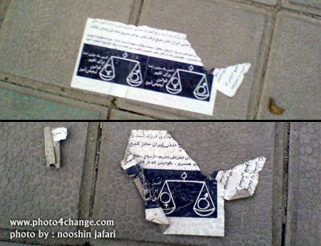

پذيرش > مقالات > علیه سکوت > کلاژ خاطرات 22 خرداد
 کمپيني ها در 22 خرداد کمپيني ها در 22 خرداد

 کلاژ خاطرات 22 خرداد کلاژ خاطرات 22 خرداد
29 تیر 1387 - گردآوري: تارا نجد احمدي - نسخه قابل چاپ
یک ماه از بیست و دوم خرداد سال 1387 می گذرد. چهارمین سالگرد روز اعتراض و همبستگی ما در خیابان.
تصمیم گرفتیم این روز را در خانه نمانیم و با توجه به شرایط جدید و با تکیه بر خلاقیت های ممکن بین مردم برویم و از خواست تغییر حرف بزنیم . یادداشت های زیر تصاویری است که برخی از کنشگران کمپین فارغ از هیاهو و بحث های اینترنتی آن روزها آفریدند، این بریده نوشته ها کندو کاوی است در خاطرات چند تن از افرادی که آن روز به خیابان آمدند تا تلنگری بر پیکر تیره و تلخ شهرشان بزنند.
ناهید / برچسب های آرزو
هر چه به 22 خرداد نزدیکتر می شدیم انگیزه ی کارگروهی و صد البته کار خیابانی برایمان بیشتر و بیشتر می شد. در مورد جمع آوری امضاء روزها برایم فرق چندانی ندارد چون از هر فرصتی برای این کار استفاده می کنم. صبح روز 22 خرداد هم چهار مسیر اتوبوس سوار شدم که خیلی عالی بود. شاید با 40 یا 50 نفر راجع به کمپین حرف زدم و حدود 35 تا امضاء جمع کردم . ولی از بیستم خرداد تا سه چهار روز بعد از 22 خرداد، شبانه و روزها به چسباندن استیکرهای 22 خرداد مشغول بودم. خیلی هیجان انگیز بود چسباندن استیکر، پخش دفترچه های کمپین که روزها به دست مردم می دادم و شب ها به داخل خانه ها می انداختم.
هر بار که یکی از استیکرها را در جاهایی مثل روی اف اف خانه ها، تلفن های عمومی، ایستگاه های اتوبوس، شیشه اتوبوس ها و ... می چسباندم، آرزو می کردم ای کاش بیلبوردهای شهر در اختیارمان بود و طرح های گرافیکی مان را بزرگتر می کردیم و روی آنها نمایش می دادیم.
آرزو می کردم ای کاش کسی به ما گیر نمی داد و به راحتی و بدون ترس و لرز از پلیس می توانستیم هر روز در جاهای مختلف شهر اپیزودهایی در مورد تبعیضات قانونی و حکایت های نابرابری را اجرا کنیم. اما اینجا احتمالا حتی این آرزوها هم غیرقانونی است.
نازلی / شهری که متعلق به شهروندان نیست
انگار شهر وقتي كه با قصد و نيت خاصي تويش قدم مي زني با وقتي كه همينطور عادي و بي تفاوت از خيابان هایش گذر مي كني خیلی فرق می کند. اين را من در آن بعد از ظهر گرم 22 خرداد فهميدم. آن موقع كه با تارا و آزاده و دلارام رفتيم تا شور و شوق و خاطره و همبستگي مان را با زنان و مردان تهراني تقسيم كنيم. و در تمام آن ساعت ها باز اضطراب همراهمان بود و تشويش! چيزي كه نزديك 2 سال است خواهرمان شده و دوشادوشمان مي آيد، بي آنكه بدانيم چرا بايد اين همه را به ما تحميل كنند.
22 خرداد 87 برايم تجربه اي متفاوت از 22 خردادهاي ديگر بود. آن روز كه رفتيم ميدان هفت تير تا حق خودمان را براي استفاده از فضاهاي عمومي ارج نهيم و به آرام ترين شيوه ي ممكن از نابرابري و تبعيض بگوييم و با همه زنان ايراني براي مبارزه با اين نابرابري ها هم پيمان شويم، برايمان عجيب بود كه چرا اين نيروهاي حافظ امنيت اينطور امنيتمان را سلب كردند. خواهرمان را روي زمين كشيدند و خيابان را ملك خود دانستند.
این بار هم وقتي در يكي از كوچه هاي خلوت ، در ميان همهمه بازي بچه ها تابلوي سازمان عقيدتي فلان نيرو را ديديم و سر آن يكي خيابان تابلوي بهمان نهاد اطلاعاتي و مقابل پارك ها بزرگ شهر ون هاي گشت ارشاد را ديگر فهميدیم كه انگار در نظر آناني كه بايد حافظ امنيت ما باشند، شهر متعلق به شهروندان نيست. فقط بستري است كه امكان تسلط مي دهد.
وقتي آزاده و تارا در خم آن كوچه گم شدند، ترس را لمس كردم، وقتي هر عابري داخل كوچه مي شد و پشت سر دوستانم گم مي شد و دل من و دلارام هري مي ريخت . و غصه ام گرفت چطور حتي ما را به برادر و خواهرمان هم بي اعتماد كردند این پيام آوران اتحاد و دوستي!
***
امروز در خیابان مرد ولگردي را ديدم كه در سايه درختي كنار آب زلال چاهي و در آرامش صداي پرندگان نشسته بود و مخدر مي كشيد. نمي دانم چه بود. اما بويش تمام خيابان را گرفته بود. و باز من ياد آن بعد از ظهر گرم افتادم كه چقدر نگران بوديم تا برچسبي را بچسبانيم و نداي برابري و حق انساني مان را با برادر و خواهرمان شريك شويم و در مقابل حس آن روز ما آرامش اين مرد معتاد طنز تلخي بود

سیاوش / تبلیغ برابری
روز 22 خرداد به دلیل مشغله زیاد من و همسرم نتوانسته بودیم کاری برای این روز خاص انجام دهیم. احساس خوشایندی نیست که در روز همبستگی زنان کاری برای جنبش زنان نکرده باشی. نزدیک غروب با چسباندن برچسبهای مخصوص 22 خرداد بالاخره کاری را پیش بردیم. شهر ما پر از تبلیغات است و چیزی که کمتر دیده میشود، تبلیغ برابری است! آنروز با چسباندن برچسبهای 22 خرداد احساس کردیم تبلیغ برابری بیش از تبلیغ کنکور و پیتزا و یخچال فریزر و غیره توجه مردم را جلب می کند. حس جالبی است: نیاز به برابری بیش از پیش یک نیاز مردمی است.
نیلوفر / در کوچه پس کوچه ها
22 خرداد امسال برایم با تجربه کار خیابانی گروهی همراه بود. مجموعه ای از تجربیات و حس های جدید. ظهر هنگام با خنده و کمی دلهره و تعدادی برچسب در جیب , پنج نفری در کوچه پس کوچه ها به راه افتادیم. به تلفن های عمومی و در خانه های چند طبقه که می رسیدیم یک نفر از جمعمان جدا می شد و برچسبی را پای زنگ خانه ها و یا روی تلفن عمومی ها می چسباند. بعضی از برچسب ها روز 22 خرداد را تبریک می گفت و بعضی یکی از قوانین تبعیض آمیز را توضیح می داد و بعضی تنها شامل لوگوی کمپین بود. ما می چسباندیم و نگاه می کردیم که فرد مشکوکی اطرافمان نباشد و در ذهن عکس العمل افرادی که با این برچسب ها رو به رو خواهند شد را تجسم می کردیم و همگی تاسف می خوردیم که چرا آدرس سایت برای پیگیری بیشتر رویشان نیست. بعد از ظهر را هم دفترچه پخش کردیم و شب را هم دوباره به چسباندن برچسب گذراندیم . شب از 12 گذشته بود که به همراه دونفر از دوستانم این بار تصمیم گرفتیم در کوچه پس کوچه های منطقه ی به قول خودمون" پولدارها" برچسب بچسبانیم. پای برجها و ساختمان های بلند. غافل از گشت های بی شمار و نگهبان های شب زنده دار این خیابان ها. در بن بست اول نگهبانی ما را دید اما خطر از بیخ گوشمان رد شد. باز ادامه دادیم و در کوچه دوم نیز ماشین گشت نیروی انتظامی از رو به رویمان گذشت . البته فکر می کنم که این محل ارزش این همه خطر کردن را نداشت چون در این محله ها همه با ماشین از کوچه ها عبور می کنند و عابر پیاده ی چندانی ندارد!اما مهم تر از آن این بود که فهمیدیم در شهری که حضور دختران خارج از خانه در نیمه شب به هزار و یک دلیل اتفاقی عجیب و مشکوک است نمی شود شب ها دفترچه پخش کرد .
هدی / کمتر از یک دقیقه
نور چراغ های ماشین که تو چشمم افتاد یهو دلم هری ریخت پایین. نمی تونستم توی ماشین رو ببینم. چند قدم رفتم نزدیکتر اما نور داشت چشمامو کور می کرد و تنها تصویر محوی از راننده رو دیدم. اضطراب عجیبی تو تنم وول می زد. شمرده و عمیق نفس می کشیدم انگار که اینجوری می تونم اضطراب رو هل بدم بیرون. می دونم که رنگم هم پریده بود. ساعت دوازده و نیم شب بود و نمی دونستم اگه طرف از ماشین پیاده بشه و یقه ام رو بگیره باید چی بگم و چه عکس العملی نشون بدم. برچسبی رو که کلی باهاش ور رفته بودم و به زور تونسته بودم از کاغذش جدا کنم، به دستم چسبیده بود. یاد چند ثانیه پیش افتادم که تو دلم به این تلاش مذبوحانه برای جداکردن برچسب می خندیدم و به برچسبه فحش می دادم که تو اون هیری ویری و کار عجله ای و پر اضطراب، منو گیر آورده بود و کاغذ رو ول نمی کرد.
یک نگاه به اون طرف کوچه انداختم که دوست دیگرم ایستاده بود و احساس کردم اونم حالش مثل منه. فکر می کردم هر اتفاقی ممکنه بیفته چون راننده ماشین رو وسط کوچه پارک کرده بود و نوربالا رو خاموش نمی کرد.
وقتی به کنار ماشین رسیدم و چشم هامو جمع کردم که حداقل قیافه طرف رو ببینم، دیدم نیلوفرِ که قرار بود سر کوچه منتظر ما باشه، اما بعد اومده تو کوچه که هوای ما رو داشته باشه.
سوار که شدیم نفسم هنوز درست بالا نمی اومد. هر چند که همه این اتفاق ها در کمتر از یک دقیقه افتاد ولی برای من اندازه چند ساعت طول کشید.

مریم / محله امن
امسال 22 خرداد به اتفاق مریم و ناهید و رهای عزیز برای پخش دفترچه و جمع آوری امضا و چسباندن برچسب به یکی از شهرک های اطراف کرج رفتیم. بگذریم که اول می خواستیم فقط دفترچه پخش کنیم ولی آنقدرجو محله مساعد بود که از توزیع دفترچه فراتر هم رفتیم و به اغلب کوچه، پس کوچه ها سر زدیم درهر خانه ای را زدیم. به واسطه آشنایی که یکی از دوستان داشت مردم هم به ما اعتماد می کردند، در را باز می کردند و ما رابه داخل خانه خود می خواندند. دراین آشنایی ها به بحث و گفتگو می نشستیم مثلا آقایی می گفت که در غرب دیگر به زنان آن حقوقی را که قبلا می دادند نمی دهند و وقتی مجبور شدم به خاطر اطلاعات غلطی که میداد با او صحبت و بحث کنم خانم ها با رضایت واشتیاق بیشتری امضا می کردند و به همدیگر می گفتند: نباید امضاها کم باشد، باید همه امضا کنیم و امضا می کردند. خوشبختانه درهرخانه چندین خانم مثل عروس و مادرشوهر ویا چندین جاری باهم زندگی میکردند، این شکل زندگی آن ها کار ما را راحت تر می کرد.
وقتی وارد محله شدیم بیشتر خانم ها از خانه ها بیرون آمدند و دور ما حلقه زدند و شروع به گفتگو کردیم .حتی سبزی فروش و میوه فروش محله هم به حرف ها ی ما دقت کردند و بیانیه را امضاکردند. ما توانستیم در چندین نقطه محله هم برچسب بچسبانیم.
علاوه بر این من شخصا موفق شدم در مسیرم اتوبان همت امضاهای بسیاری بگیرم و برای دقایقی با زنان خسته ای که از سر کار برمی گشتند در موردمسائل خودشان گفتگو کنم.
نوشین / آرامش فعال
امسال دقيقاً 22 خرداد مصادف بود با روز قبل از اولين امتحان دانشگاهم. نشستن تو خونه و سكوت كردن برام عذاب آور بود اما از اونجايي كه در طول ترم درس نخونده بودم مجبور بودم براي جبران يك ترم تنبلي اون روز رو تا شب و شب رو تا صبح بيدار بشينم و درس بخونم.
ساعت حوالي 6:30 صبح 23 خرداد بود كه از خونه زدم بيرون تا خودم رو به جلسهي امتحان برسونم. با سرعت داشتم ميرفتم سوار ماشين بشم كه حس كردم يه چيز آشنا (!) روي زمين ديدم. چند قدم به عقب برداشتم و برگشتم سمت شيء رؤيت شده. برچسب كمپين بود!
انرژي و هيجاني كه با ديدن اون برچسب درونم به وجود اومد وصف شدني نيست.اون برچسب يه برچسب ساده نبود. يه نشانهي مهم بود براي من كه فكر ميكردم 22 خرداد سوت و كوري رو پشت سر گذاشتيم. براي اينكه ايمان بيارم كمپينيها با وجود تمام فشارها، توهينها، تحقيرها و تهديدها در يك "آرامش فعال" به حركتشون ادامه ميدهند و پاي اعتقاداتشون ايستادند.
مریم / اولین 22 خرداد من
این اولین 22 خردادی بود که من در کنار فعالین جنبش زنان حضور داشم. خیلی دلم می خواست مانند سالهای گذشته باشد پر از شور و نشاط و بیان خواسته های زنان در جامعه. آن روز هم صبح زود فعالیتمان را آغاز کردیم به همدیگر این روز را تبریک گفتیم، دفترچه و استیکرها را مرتب و تقسیم کردیم. من و یکی از بچه ها به خیابان رفتم و شروع کردیم به چسباندن استیکرها به باجه های تلفن و در و دیوار. انگار داشتیم با این کار به همه میگفتیم امروز 22 خرداد روز همبستگی زنان ایران است. مردم با تعجب ما را نگاه می کردند بعد مطالب روی آن را می خواندند. در مترو و خیابان دفترچه پخش کردیم. در حالیکه زنان دیگر با اشتیاق مشغول خواندن دفترچه ها بودند یکی از زنان که از خرید برگشته بود وقتی دفترچه را گرفت خودش را با آن باد زد و بعد در کیفش گذاشت، نیلوفر گفت: خانم این دفترچه را لطفا مطالعه کنید بی تفاوت در کیفتان نگذاریدش و زن گفت: من خودم در یکی از ان جی او ها فعالیت میکنم و این ها را تمام خواندم و برایم تکراری هست و با بی تفاوتی دفترچه را از کیفش درآورد و می خواست به خانم دیگری بدهد . یکی از خانم ها که دفترچه ای را با شوق تمام گرفته بود گفت میشه من یکی اضافه هم برای دوستم بگیرم ؟ زنی که دفترچه اش را پس می داد از خجالت سرخ شد و حتما پشیمان و من هم دفترچه دیگری به مادرش دادم تا اگر بعدها خواست بتواند دفترچه را از مادرش بگیرد و بخواند. امیدوارم در سال های آینده بیست و دوم های پرشورتری در پیش داشته باشیم، بدون هراس از دستگیری فعالین زنان.

آیدا / همدستی زمین و زمان
21 خرداد: قرار است با استیکر ها و دفترچه ها پیام همبستگی زنان در 22 خرداد را به شهر ببریم. بی توجه به علامت ورود ممنوعی که برای فعالین جنبش زنان روی نام عرصه ی عمومی نقش بسته است. می توانستیم همایش برگزار کنیم. می توانستیم در یک تجمع آرام بی آن که تهدیدی باشیم برای امنیت جایی یا کسی، حرفمان را بزنیم. می توانستیم خیلی کارهای دیگر بکنیم یعنی ایده اش بود اما بعد از یک سال کار و این همه حکم تعزیری و تعلیقی و تهدید های روانی باید ابتکار بیشتری به خرج می دادیم که کم هزینه تر اما موثر تر سهم خود را از عرصه ی عمومی که از ما دریغ می شود را مطالبه کنیم. سخت نیست، خلاقیت می خواهد و پشتکار. می دانم که دوستان زیادی با اشتیاق و جسارت هر روز به خیابان می روند و دفترچه پخش می کنند و امضا جمع می کنند. با احتیاط بیشتر اما. خب ما هم قرار است باشیم و هستیم. با نفیسه هفت تیر قرار داریم. سر قائم مقام تاکسی می گیریم و از همانجا شروع می شود. کنار پنجره نشسته ام و همینطور که مشغول حرف زدن هستیم استیکر را در می آورم و چیزی به پیاده شدنمان نمانده که می چسبانمش زیر شیشه و بعد میدان آرژانتین و ایستگاه اتوبوس جایی که به چشم بیاید یک استیکر دیگر می چسبانم و خلاصه تا شب هر جا که بشود ادامه می دهم و به در پارکینگ خانه و زیر زنگ آیفون و شب ایمیل می زنم به بچه که که :"چه لذتی دارند چسباندن این استیکر ها!! "
22 خرداد: پر از اشتیاق هستم برای رسیدن بعد از ظهر امروز . گیشا و کوچه پس کوچه هایش به انتظار ما و دفترچه های کمپین و پیام همبستگی هستند. با هدا میدان ونک قرار گذاشته ایم و قرار است ساعتی بعد میرا هم به جمع ما اضافه شود. تلفن می زنند که برنامه ی گالری راه ابریشم را لغو کرده اند و شمارش معکوس برای یک ماجرای دیگر شروع می شود. هر طور شده باید خودم را برسانم به خانه. ساعت 5 عصر من با یکی از دوستان راهی گالری راه ابریشم می شوم و بچه ها بدون من می روند با دفترچه ها و ماشین. نگرانیم و می دانیم که اتفاقاتی در شرف وقوع است.
23 خرداد: جلوی گالری راه ابریشم به همراه تعدادی از دوستان بازداشت می شویم و در ون گشت ارشاد به زنانی که بازداشتمان کرده اند دفترچه می دهیم و ماموران امنیتی که احاطه مان کرده اند دفترچه ها را می خوانند. تا یک بامداد که آزاد شویم زمین و زمان دست به دست هم داده اند تا نه تنها خیابان های تهران که تمام دنیا پیام همبستگی زنان ایرانی در 22 خرداد را بشنود. سال دیگر پرشور تر خواهیم بود بی گمان.
جمشید / روزانه ها و شبانه های ما
ما نمی توانیم تجمع کنیم، اما در هر محله و کوی و برزن حرف و سخن کمپین را به میان میاوریم
با یک دفترچه، یا یک بر چسب کوچک
اما محتوایی بزرگ
با یک نمایش کوتاه
ولبخند تلخ زنانی زخم خورده
ما نمی توانیم حرف بزنیم و یا فریاد بکشیم نا برابری را
ولی هر محله و کوی و برزن سخن ما را شبانه روز سرود می کند
نیازی به تجمع نیست ، ایران سالهاست در فریاد خود خفته است
گرد آوری : تارا نجد احمدی
ارسال به
بالاترین
،
توییتر
،
فریندفید
،
فیسبوک
در همين بخش :
 8 مارس روزی که نمی توان از ما دریغ کرد 8 مارس روزی که نمی توان از ما دریغ کرد
با طلاق توافقی از حقارت و کتک و فحش رها شدم /گزارشی از دادگاه محلاتی: مریم مالک
تجمع مادران عزادار در رشت
تغییر ممکن است/ جلوه جواهری(26 روز پس از بازداشت کاوه مظفری)
گامهایی که با تزلزل نا آشنایند/ گرامی داشت چهلم ندا در رشت
ديگر بخش ها :
طرح یک میلیون امضا
|
مقالات
|
سایت نوشته ها
|
اخبار
|
گزارش كمپين
|
گفت و گو
|
علیه سکوت
|
كوچه به كوچه
|
نامه های شما
|
گزارش ویژه
|
گفتگو با اعضا
|
ویژه سالگرد کمپین
|
تصویر برابری
|
دل آرام علی
|
تریبون
|
مقالات
|
تاریخ شفاهی
|
خارج از چارچوب
|
کتابخانه
|
درباره کمپین
|
کمپین در شهرها
|
کمپین در بند
|
صدای تغییر
|
ویژه 22 خرداد
|
لایحه حمایت از خانواده
|
گالری
|
عشا مومنی
|
امیر یعقوبعلی
|
خدیجه مقدم
|
راحله عسگری زاده و نسیم خسروی
|
پروین اردلان،جلوه جواهری، مریم حسین خواه، ناهید کشاورز
|
زینب پیغمبرزاده
|
سعیده امین، سارا ایمانیان، محبوبه حسین زاده، ناهید کشاورز و همایون نامی
|
احترام شادفر
|
نسیم سرابندی زاده،فاطمه دهدشتی
|
وبلاگ مهمان
|
پرونده خرم آباد
|
دستگیری ها
|
مریم مالک
|
پرستو اللهیاری
|
مهرنوش اعتمادی
|
سمیه رشیدی
|
Other Languages
|
همراهان
|
«فراخوان کمپین ده روز با بهاره هدایت»
| English
|